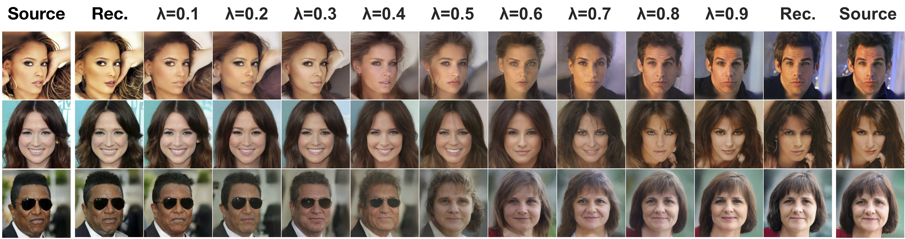

Interpolation and reconstruction
Our model can interpolate images in latent space, in effect removing artifacts introduced by pixel-space interpolation. Interpolations can be customized in a coarse-to-fine manner by choosing the timestep where mixing is performed. Reconstructions are high-quality.
Interpolations of CelebA-HQ 256x256 images with 500 timesteps of diffusion. Real actors are on the left and right. Others are generated by our model. Coarse-to-fine interpolations. Lossiness can be controlled.
Coarse-to-fine interpolations. Lossiness can be controlled.